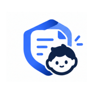

(계)
약한청년들
계약서 검토
/
검토 워크스페이스
나가기 ↗
CONTRACT REVIEW
리포트 저장 ↓
✧
AI 에이전트
↻
필수 조항 확인
위험 조항 검토
계약서에 관해 질문하기
＋ PDF 첨부
➤
원본 계약서
PDF 원본 열기 ↗
‹
›
−
100%
＋
빨강 · 우선 확인
노랑 · 확인 필요
초록 · 참고
✧
계약 검토 결과
요약
필수 조항
위험 조항
확인 질문